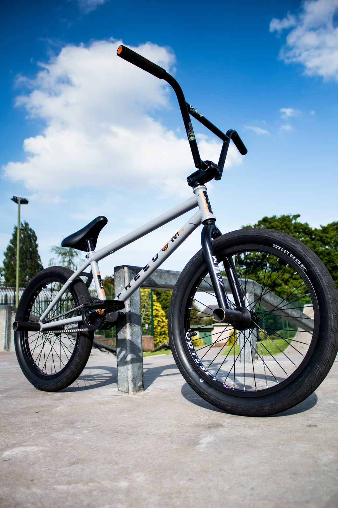
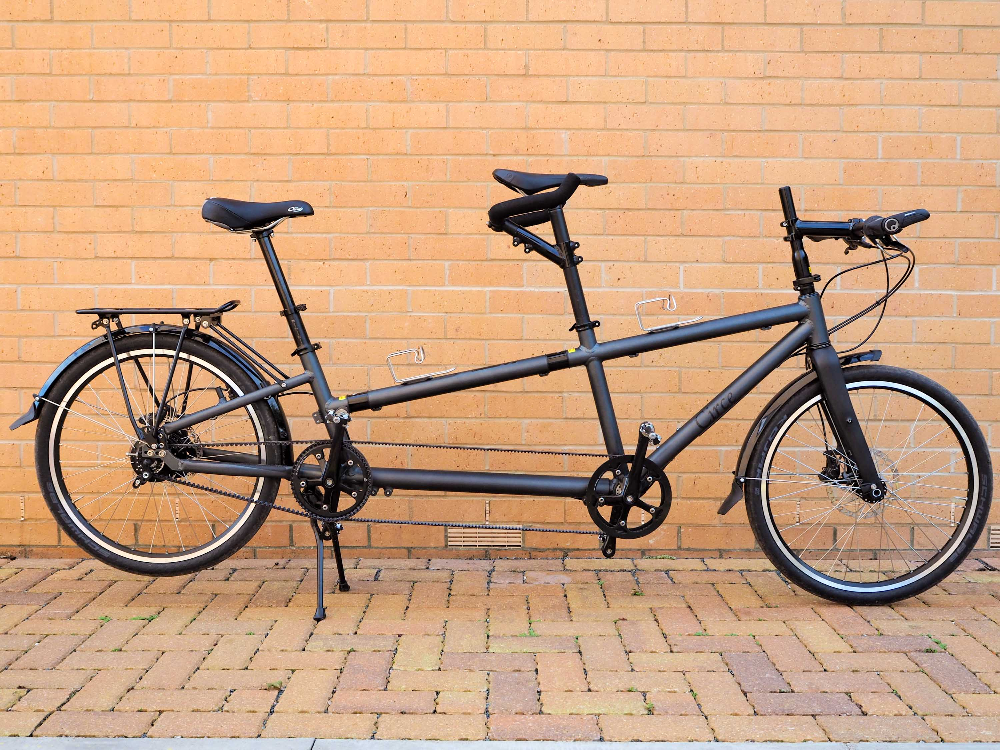
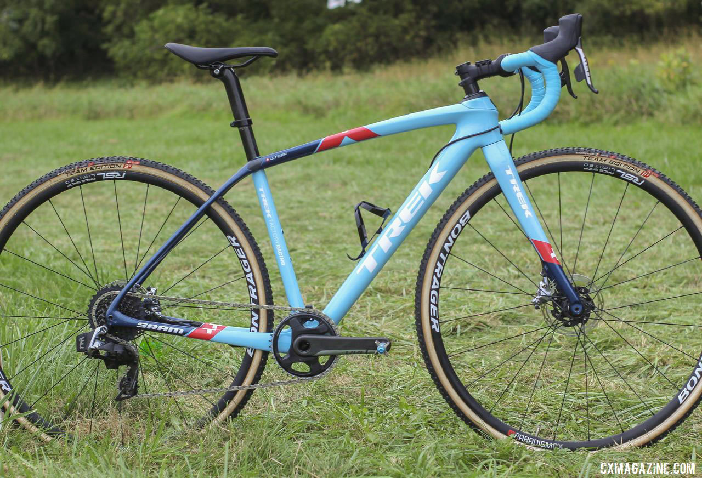
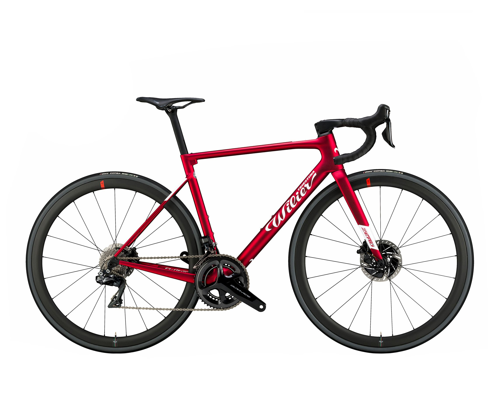

6 types of cycling you should try
cycling benefit
we cyclists tend to have our tried and tested preferred discipline. Whether you're a roadie, MTBer, or commuter, there's a style you default to on two wheels
Except for having two wheels varying cycling discipline couldn't be more different. From the bikes, to the kit, to the demographic and to the skills required.
Each cycling type has it benefits for the body, and many of the skills required for one are transferable to another.
BMX

Developed to bridge the gap between motocross and Bicycles, BMX is a stunts and ramps coordinated style of riding. Short bursts of energy propel you from one side of a skate park to another,whilist tackling obstacles along the way.
BMX has a lot of advantages- it's extremely fun, and can be ridden both indoor and outdoors. it's an all year round sport which doesn't require all the kit you would usually take on the trails if you're a mountain biker at heart.
BMX bikes are fairly cheap in the grand scheme of bikes, with entry levels starting from $150. With the growing popularity of cycling, more skate-parks and indoor facilities are opening up around the country - so why not give it a go?!
TANDEM CYCLING

Dating back to the late 1800's, the tandem bike was developed to be ridden by more than one person at a time. Commonly regarded as a novelty cycle, which you would often see around tourist and holiday destinations, tandems are actually rather popular in the race scene
Road, off-road and fat-bike tandem have began to creep onto the scene in force. And ask why not? They are fun and they put a whole new spin on "team work". Tandem riding is harder than it looks because you're riding for the both of you which requires a lot of trust, and a lot of effort to synchronise fitness abilities and cadence
It's great fun to try out, with a lot of parks, bikes stores and tourist facilities hiring them out
cyclocross

Essentially a road racing bike, but with mountain tires. Cyclocross is a messy, but extremely fun sport to get into.
CX racing asks for a lot of power from the rider, to pedal through difficult and challenging terrain, but it also requires some technical skill as well. usually consisting of short laps, this sixty minute racing style will have you working every muscle and using all yur cycling knowhow
Professional atheletes such as downhill rider, train in the off-season with cyclocross. Seeing as it's a transition discipline between road and mountain, many atheletes and hobbyists enjoy the elements from each major discipline
Mountains

All mountain riding has everything to really give you a good workout, and a good adrenaline rush.
Mountains bbikes are considerably heavier than road bikes, and with soft supple suspension, it makes climbing a bitter sweet affair. All aspects from the climbing descending, and everything in between has our body working up a sweat
Having conquered the climb, the descents are what really make up fror it. Fast and flowy, or loose and technical there is a trail suitable for you.
Covering miles and trees on a mountain bike is a fanstatic way to transfer skills into your primary discipline. When it comes to racing, there are many different styles of events -from endurance TT's, to a bunch racing and of course sprinting for the ultimate demonstration of short term power
Road

The most popular of the cycling disciplines has to be road cycling.
Lightweight bikes and endless miles of tarmac to cover. Difficulty lies within the energy management, pace and endurance... and traffic
Cardio, muscle conditioning and general bike confidence are all key skills that can be honed with road cycling. These refined techniques may not seem so obvious at first, but hopping back onto the MTB after a while will seem easier and your fitness levels improved.
Road cycling doesn't requires constant pedalling, in a fixed gear. If you do it right this teaches you to use your cadence efficiently.
HYBRID
Hybrid bikes are best described as a mix of road, Mountain and touring bike designs, making them more of "do-it-all" kind of bikes that cater to a wide range of uses. These bikes usually sport a combination of large road bike sized wheels that make them work amazingly well on both paved trails and smooth dirt. They also feature a flat bar and a headsup ride to ensure better view and comfort while riding. They may often contain disc brakes for responsive and impressive braking, especially when riding in turbulent weather conditions.
Many hybrid bikes that are considered as commuted-friendly
models include fenders, racks and lighting systems.
However, it is important to note that
No two hybrid bikes are entirely same to you.
2022 copyright dev Elijah